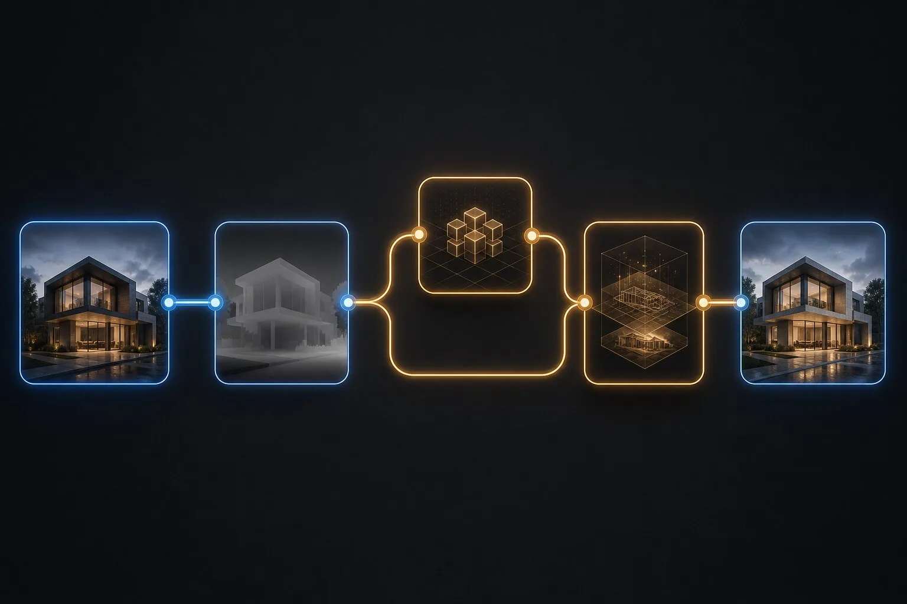

Can Depth Anything 3 recover control from a flat architectural render?
Yes. Depth Anything 3 can estimate a useful depth map from one render, giving ComfyUI a structural guide when native geometry passes are unavailable. It cannot recover exact dimensions or hidden surfaces. Check glass, thin elements, repeated bays and large planes before using the map with ControlNet.
The only file left is a JPEG. No model. No Z-depth pass. No material IDs. A client wants the lighting changed by lunch.
This is the unglamorous problem behind a lively ComfyUI community question from today's sweep: how do you enhance an architectural render when the original controls are missing? One practical answer is to infer depth from the image, then use that estimate to constrain a new generation. Depth Anything 3 makes that route considerably more capable. It does not make the missing source reappear.
The distinction matters. Recovered depth can steady a repair. It cannot prove what the building is.
What does Depth Anything 3 provide?
Depth Anything 3, published at ICLR 2026, predicts spatially consistent geometry from arbitrary visual inputs with or without known camera poses. Its authors describe a single transformer backbone and a depth-ray representation that supports monocular and multi-view inputs. The official repository includes code, models and links to ComfyUI nodes supporting single views, multiple views, video-consistent depth and optional point-cloud export.
The authors report benchmark improvements over Depth Anything 2 for monocular depth and over VGGT for multi-view depth and pose estimation. Those are research results on stated benchmarks. They are not a guarantee that one compressed dusk render will correctly separate a glazed balustrade from the atrium behind it.
For architectural image repair, the useful output is usually a relative depth map: brighter and darker values describe ordering and distance patterns that a compatible ControlNet can follow. That is enough to preserve broad volumes during relighting or material cleanup. It is not a dimensioned model.
When should inferred depth be the last resort?
Whenever a better source exists. A depth pass exported from the renderer knows the camera and visible geometry. A viewport Z-buffer comes from the scene. A normal pass captures surface orientation. An inferred map studies the finished pixels and makes its best guess.
Our control-map hierarchy puts native model data first, renderer passes second and inferred depth third. This is not snobbery about file formats. Each step downward discards evidence. If the renderer can export a clean pass in five minutes, do that before asking a vision model to reconstruct it from reflections and fog.
Use Depth Anything 3 when the source is truly missing, when an external visualization arrives without passes, or when an exploratory correction does not justify rebuilding the scene. Label the map as inferred so it does not acquire an invented pedigree during handoff.

How do you build the ComfyUI recovery graph?
Keep the graph plain. Load the original at its delivered aspect ratio. Send an untouched branch to preview and comparison. Feed a second branch into a maintained Depth Anything 3 node, then preview and save the raw depth map before connecting any generative stage.
Next, route that map into a depth-compatible ControlNet with the checkpoint and model family matched correctly. Feed the original image into the image-to-image path. Start with modest denoise and control strength because the goal is repair, not unsolicited architecture. Add a mask if the requested change is local.
| Stage | Purpose | Save |
|---|---|---|
| Load image | Preserve crop and source pixels | Original filename and dimensions |
| Estimate depth | Recover visible spatial ordering | Raw map, node and model version |
| Inspect | Find bad planes and boundaries | Annotated rejection frame |
| ControlNet | Constrain the generation | Model and strength |
| Image-to-image | Apply the requested visual change | Seed, denoise and prompt |
| Compare | Catch geometric drift | Overlay or difference image |
Do not add upscaling, relighting, face repair and three LoRAs before the depth map passes inspection. A dense graph turns one bad assumption into a committee meeting. The workflow preflight explains how to inspect unknown nodes, models and inputs before spending a generation.
Which architectural details break monocular depth?
Glass is the obvious offender. The visible surface, reflected scene and room beyond occupy different depths in one patch of pixels. A depth estimator has to choose. Check curtain walls, mirrors, polished stone and water before anything else.
Thin elements also suffer. Railings, cables, mullions and tree branches can disappear, merge with the background or acquire a fuzzy depth halo. Those errors matter because ControlNet may interpret the halo as a physical edge and grow a thicker element around it.
Large blank planes look easy but can hide gradients that bend a wall or floor. Repeated bays may collapse into one band. Deep shadows can merge openings with recesses, while atmospheric haze may push objects farther back than their geometry warrants.
Use a false-colour preview or high-contrast curve for inspection. Trace major edges with your eye. The depth boundary should agree with the visible building, even when the absolute values are unknown. If a column changes depth halfway up, stop. A prettier output will not repair the evidence.
How should the map be tested before generation?
Pick five protected features: the roofline, one opening, one thin element, a foreground object and the ground contact line. Compare each feature in the source and depth preview. Mark pass, repair or reject.
Then run a low-cost diagnostic generation with a deliberately restrained prompt. Keep the camera, massing, openings and primary materials. Ask for one visible change, such as overcast light. If the facade shifts while the atmosphere improves, lower denoise, raise appropriate control or repair the map. Our base-render acceptance gate is useful here because polish cannot rescue a source that already fails geometry review.
Use the same seed while adjusting one setting at a time. Otherwise the experiment becomes a slot machine with excellent cable management. Record control strength and denoise beside each output.
What can be repaired, and what should be rejected?
Small maskable errors can be repaired. Paint out a halo around a railing, smooth a wall plane or protect glazing with a local mask. If the depth ordering of an entire atrium is wrong, manual repair is effectively redrawing the building in grayscale. Find another source or rebuild the needed geometry.
A single inferred map is often suitable for atmosphere changes, restrained material refinement and local cleanup. It is poor evidence for precise facade redesign, verified daylight behaviour or any claim involving dimensions. For multi-view work, use multiple views together when the node supports them, then apply the paired-camera consistency test. Independent single-view estimates can describe two slightly different buildings.
Point-cloud export is interesting for inspection and experimentation, but an estimated point cloud should carry the same warning as the map. Density does not create accuracy. More points can describe the same wrong glass wall with impressive commitment.
The missing pass should change the promise
A recovered-control workflow is valuable because it turns a stranded image into something editable. It is also a compromise forced by missing source material. The output should be presented accordingly.
Save the original, raw depth, corrected depth, graph, settings and final comparison. State that the depth was inferred with Depth Anything 3 and name the version. If the job matters enough to repeat, ask for native passes next time. Our preservation brief gives the handoff a clear list of protected facts.
Depth Anything 3 can pull structure from a flat image. It cannot pull certainty from one.
Evidence note: sources checked 10 October 2026 include the official Depth Anything 3 repository, the ICLR 2026 paper record and the ComfyUI community discussion surfaced in today's sweep. Research performance is attributed to the authors. This article reports no ArchiGen benchmark or hands-on product test.